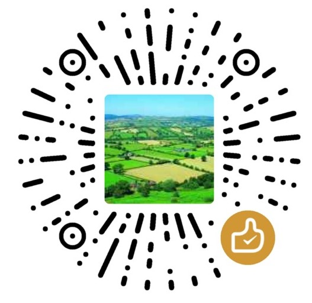

Redis数据结构
redis都有哪些数据类型？分别在哪些场景下使用比较合适？】
- redis主要有以下几种数据类型：string；hash；list；set；sortedset。
- string：这是最简单的类型，就是普通的set和get，做简单的KV缓存。
- hash：这个是类似map的一种结构，这个一般就是可以将结构化的数据，比如一个对象给缓存在redis里，然后每次读写缓存的时候，可以就操作hash里的某个字段。
- list：有序列表，可以通过list存储一些列表型的数据结构，类似粉丝列表、文章的评论列表之类的东西。比如可以通过lrange命令，读取某个闭区间内的元素，可以基于list实现分页查询，这个是很棒的一个功能，基于redis实现简单的高性能分页，可以做类似微博那种下拉不断分页的东西，性能高，就一页一页走。
- set：是无序集合，自动去重。直接基于set将系统里需要去重的数据扔进去，自动就给去重了，如果你需要对一些数据进行快速的全局去重，你当然也可以基于jvm内存里的HashSet进行去重，但是如果你的某个系统部署在多台机器上呢？得基于redis进行全局的set去重。可以基于set进行交集、并集、差集的操作，比如交集吧，可以把两个人的粉丝列表整一个交集，看看俩人的共同好友是谁？把两个大V的粉丝都放在两个set中，对两个set做交集。
- sortedset：sortedset是排序的set，去重但可以排序，写进去的时候给一个分数，自动根据分数排序。获取排名前三的用户（默认是升序，所以需要 rev 改为降序）
赏
微信打赏
赞赏作者